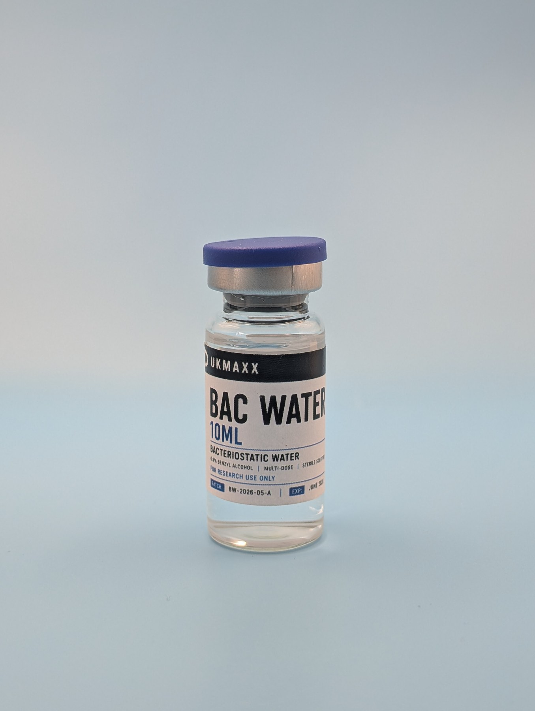

Bacteriostatic Water 10ml UK guide.
UKMAXX lists BAC Water as a 10ml laboratory support item for compatible reconstitution workflows. This page explains the product role, UK dispatch and how it fits alongside batch-verified research compounds.

What is BAC Water on UKMAXX?
BAC Water is a support item used in compatible laboratory reconstitution workflows. UKMAXX lists it separately from third-party tested peptide and compound batches so the role of each item is clear.
The UKMAXX product code is WA10. It is sold as a support item for research handling.
How it fits with batch-verified products
Peptide and compound products on UKMAXX are handled through batch records and published COA data where applicable. BAC Water supports compatible laboratory workflows but does not replace the COA record for the research compound itself.
UK stock and tracked dispatch
Current BAC Water stock is held in the UK and dispatched using Royal Mail Tracked 24. Working-day orders placed before 2PM are usually dispatched the same day.
For live stock, price and basket options, use the BAC Water 10ml product page. To check peptide and compound batch records, open the UKMAXX COA checker.
Researchers often check BAC Water alongside batch-verified stock such as RETA 10MG, BPC-157 5mg and NAD+ 500mg.
BAC Water FAQ
Is BAC Water a peptide?
No. It is listed as a support item for compatible laboratory reconstitution workflows.
Does BAC Water have a Janoshik COA?
No. Third-party COA records apply to released peptide and compound batches. BAC Water is shown separately as a support item.
Can BAC Water be bought by itself?
Yes, when in stock. The live product page shows current availability and checkout options.